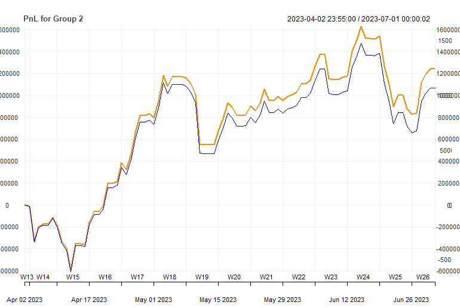

# Read the CSV file
data <- read.csv("final_results_out_sample.csv")Quantitative strategies on High Frequency Data - 2025
Group 1 - Final Strategy - Pair Trading
Considering the NASDAQ index future price and S&P 500 index future price represent the same returns on short/long run. If there is any change it should be temporary and should return back to earlier spread. So pair tradindin with mean reverting.
We used mean reverting pair trading using previous day average closing price ratio based spread and sds (standard deviation) ratios of returns based spread. Initially we tried different combination of entry/exit parameters and found that parameters those fit very well for particular dataset does not mean to fit significantly for the different data set. This because of changes in trends/patterns between data due to course of time. So we decided to find the best parameters on weekly basis and use them to run the pair strategy for next week. So technically every weeks parameters shifted to next week. Therefore for any given data set pre condition becomes it must be more than one week and ultimately we don’t trade at all the very first week of any given trade.
Assumptions
do not trade first week of every quarter
do not use in calculations the data from the first and last 10 minutes of the session (
9:31-9:40and15:51-16:00)do not hold positions overnight (exit all positions 20 minutes before the session end, i.e. at
15:40),do not trade within the first 25 minutes of stocks quotations (
9:31-9:55), but DO use the data for9:41-9:55in calculations of signal, volatility, etc.
Parameters are
spread.name = 1 (average mean ratio based spread) or 2 (sd ratio based spread).
net.SR = net sharpe ratio based on net pnl.
m = multipler to form upper and lower limits of signal.
volat.sd = rolling volatility of spread based on 60, 90, 120, 150 or 180 minutes data.
We calculated these parameters on daily basis and analysis them weekly basis to select the best one as per maximum net SR ratio and saved every Friday. Further we moved these parameters to next week Monday morning and filled the whole week as minute data.
Sample parameters from 2024 Quarter 2 (in sample data) looks like
Entry/exit technique
Every minutes, parameter “spread.name” type 1 or 2 based value used as signal, parameter “volat.sd” used to define rolling standard deviation of signal and finally multipled with +/- parameter “m” to get the upper and lower limit. If signal crosses the upper limit we go short and vice versa as mean reverting is applied.
Strategy performance
Below graph represent net vs gross pnl for out of sample 2024 Q4.
Group 1 - 2022-2024 quarterly results (out sample data)
# Display the table
knitr::kable(data)| X | Quarter.Name | Gross.SR | Net.SR | Gross.CR | Net.CR | Gross.cumP.L | Net.cumP.L | Av.ntrades | Stat |
|---|---|---|---|---|---|---|---|---|---|
| 1 | 2022_Q2 | 3.786966 | 3.221686 | 13.739149 | 11.514675 | 37695.061 | 32126.32 | 1.932203 | 39.952187 |
| 2 | 2023_Q1 | -0.924567 | -1.937151 | -1.647921 | -2.635071 | -6691.361 | -13934.36 | 2.483333 | -6.941720 |
| 3 | 2023_Q3 | -2.309336 | -4.301788 | -3.232991 | -3.877103 | -15872.490 | -28903.23 | 4.100000 | -13.042394 |
| 4 | 2024_Q3 | 2.908354 | 2.192217 | 15.945108 | 10.916840 | 25111.430 | 18954.20 | 1.868853 | 32.117622 |
| 5 | 2024_Q4 | 2.431699 | 1.151158 | 8.872391 | 2.782567 | 17241.929 | 8063.59 | 2.754098 | 5.808217 |
Approaches undertaken
Group 2
We used the different strategies including and excluding some assets. First of all, we tried based on pair trading using average closing price spread and standard deviation of returns based on spread dividing pairs by currencies(CAD&AUD) and metals(XAU&XAG). The results were not satisfactory.
Secondly, from fundamental perspective, we decided to omit CAD since It has positive relationship with USD which has negative relationship with XAU and It has similar trend pattern with AUD. In our strategy, we used momentum approach using 30 and 90 SMA for AUD and pair of XAU&XAG.
Group 2- 2022 first quarter results
| gross SR | net SR | gross CR | net CR | gross cumP&L | net cumP&L | av.ntrades |
|---|---|---|---|---|---|---|
|
|
|
|
|
|
|

In the first quarter of 2022, our strategy concluded with negative PnL due to high volatility and Its stat value is -2.3672.
Group 2 - 2022 third quarter results
| gross SR | net SR | gross CR | net CR | gross cumP&L | net cumP&L | av.ntrades |
|---|---|---|---|---|---|---|
|
|
|
|
|
|
|
 In the third quarter of 2022, our strategy concluded with profit and Its stat value is 10,9323.
In the third quarter of 2022, our strategy concluded with profit and Its stat value is 10,9323.
Group 2 - 2022 fourth quarter results
| gross SR | net SR | gross CR | net CR | gross cumP&L | net cumP&L | av.ntrades |
|---|---|---|---|---|---|---|
|
|
|
|
|
|
|

In the 4th quarter of 2022, our strategy was unsuccesfull, so Its stat value is -5.5088.
Group 2 - 2023 Second quarter results
| gross SR | net SR | gross CR | net CR | gross cumP&L | net cumP&L | av.ntrades |
|---|---|---|---|---|---|---|
| 1.8115 | 1.5756 | 4.3407 | 3.6753 | 1243477.0309 | 1070183.7479 | 5.1556 |

In the second quarter of 2023, our stratgey concluded with success and its stat value 25.6372.
Group 2 - 2023 Fourth quarter results
| gross SR | net SR | gross CR | net CR | gross cumP&L | net cumP&L | av.ntrades |
|---|---|---|---|---|---|---|
| 0.4194 | 0.1852 | 0.9724 | 0.4112 | 323969.7207 | 142276.2714 | 5.0444 |

In the fiurth quarter of 2023, our strategy was successfull with 2.0388 stat value.
Group 2 - 2024 First quarter results
| gross SR | net SR | gross CR | net CR | gross cumP&L | net cumP&L | av.ntrades |
|---|---|---|---|---|---|---|
| -0.1721 | -0.4597 | -0.4496 | -1.0528 | -103307.4365 | -274562.6246 | 4.6957 |
 In the first quarter of 2024, our strategy concluded with negative PnL and Its stat value is -5,9118.
In the first quarter of 2024, our strategy concluded with negative PnL and Its stat value is -5,9118.
Group 2 - 2024 Second quarter results
| gross SR | net SR | gross CR | net CR | gross cumP&L | net cumP&L | av.ntrades |
|---|---|---|---|---|---|---|
| 1.1043 | 0.98689 | 1.8792 | 1.662 | 1670146.1874 | 1487773.1757 | 5.0326 |
 In the second quarter of 2024, our strategy concluded with positive PnL and Its stat value is 12.1413.
In the second quarter of 2024, our strategy concluded with positive PnL and Its stat value is 12.1413.
Group 2 - 2022-2024 quarterly results
data1 <- read.csv("quarter_stats.all.group2.csv")| quarter | assets.group | grossSR | netSR | grossCR | netCR | av.daily.ntrades | grossPnL | netPnL | stat |
|---|---|---|---|---|---|---|---|---|---|
| 2022_Q1 | 2 | -0.0880 | -0.3203 | -0.1288 | -0.4406 | 4.6111 | -59418.29 | -215532.6 | -2.3672 |
| 2022_Q3 | 2 | 1.0079 | 0.7994 | 2.2683 | 1.6832 | 4.7634 | 838372.21 | 661778.9 | 10.9323 |
| 2022_Q4 | 2 | -0.2837 | -0.4873 | -0.5529 | -0.9163 | 4.9011 | -238877.84 | -408326.5 | -5.5088 |
| 2023_Q2 | 2 | 1.8185 | 1.5756 | 4.3407 | 3.6753 | 5.1556 | 1243477.03 | 1070183.7 | 25.6372 |
| 2023_Q4 | 2 | 0.4194 | 0.1852 | 0.9724 | 0.4112 | 5.0440 | 323969.72 | 142276.3 | 2.0388 |
| 2024_Q1 | 2 | -0.1721 | -0.4597 | -0.4496 | -1.0528 | 4.6957 | -103307.44 | -274562.6 | -5.9118 |
| 2024_Q2 | 2 | 1.1043 | 0.9869 | 1.8792 | 1.6620 | 5.0326 | 1670146.19 | 1487773.2 | 12.1413 |